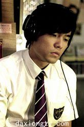
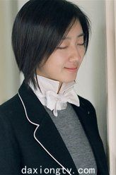
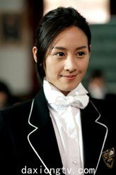
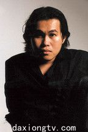

《不能说的秘密》人物介绍

叶湘伦 （周杰伦）
出生在单亲家庭，但他性格活泼开朗，且拥有非凡的音乐才华。在父亲的耳濡目染下，他热爱音乐并且琴艺过人。他在父亲任教的学校就读时喜欢上了同班的女孩小雨，但小雨似乎很神秘。在毕业典礼那天，他发现小雨跟自己不是一个时代的人，只有自己看得见她。于是他也弹起了那首《Secret》回到过去寻找小雨。

路小雨 （桂纶镁）
一个喜欢弹琴、清秀脱俗的神秘女孩，也是湘伦父亲的学生。某天她在琴房弹奏一本名叫《Secret》的乐谱时，被穿越到20年后的同一间教室，与被音乐吸引的叶湘伦相遇。两人的感情在不知不觉间迅速深化，在并不漫长的相处中达到了互相分享秘密的阶段。由于其他人不知道这一切，所以他们都误以为小雨有精神病。

晴依 （曾恺玹）
爱慕叶湘伦，是叶湘伦的同班同学。当叶湘伦示意同学把字条传给最后一桌的小雨时，字条却传到了在同学眼里是最后一桌的晴依手里，以至于叶湘伦约到的不是小雨而是晴依。这一幕被小雨看到后，她误以为湘伦与晴依在一起了而伤心的离开。

阿郎 （黄俊郎）
阿宝好友
黄俊郎介绍：
黄俊郎，1973年8月5日出生于台湾省高雄县，毕业于台北大学地政系，华人版图出版社艺术总监、作词人。 2002年出版了图书《这本书》。2003年黄俊郎为周杰伦的歌曲《以父之名》作词。2007年客串出演爱情电影《不能说的秘密》。2010年参演爱情科幻剧《熊猫人》。2013年在爱情电影《天台爱情》中饰演阿郎，同年出版图书《黄俊郎的黑》。
黄俊郎介绍：
黄俊郎，1973年8月5日出生于台湾省高雄县，毕业于台北大学地政系，华人版图出版社艺术总监、作词人。 2002年出版了图书《这本书》。2003年黄俊郎为周杰伦的歌曲《以父之名》作词。2007年客串出演爱情电影《不能说的秘密》。2010年参演爱情科幻剧《熊猫人》。2013年在爱情电影《天台爱情》中饰演阿郎，同年出版图书《黄俊郎的黑》。
詹宇豪介绍：
詹宇豪，1981年10月3日出生，就读台湾艺术大学音乐系，强项是古典钢琴，南拳妈妈成员，后单飞加入台湾艺人团体“小宇宙 ”。曾参演多部电视剧及MV的拍摄，表现不俗。在音乐上也有出色表现。曾演出过的电视：南拳妈妈的音乐MV、周杰伦音乐爱情电影《不能说的秘密》、《星情花园》等。